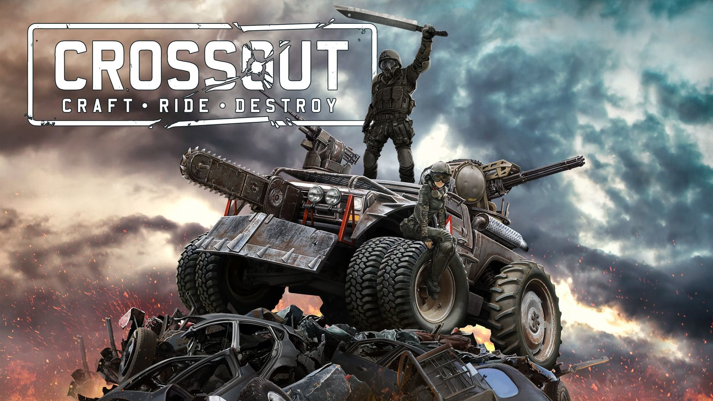

Компью́терная игра́ — компьютерная программа, служащая для организации игрового процесса (геймплея), связи с партнёрами по игре, или сама выступающая в качестве партнёра[1].
В настоящее время, в ряде случаев, вместо термина компьютерная игра может использоваться видеоигра, то есть данные термины могут употребляться как синонимы и быть взаимозаменяемыми[2][3][к. 1]. В компьютерных играх, как правило, игровая ситуация воспроизводится на экране дисплея или обычного телевизора (в этом случае компьютерные игры одновременно являются и видеоиграми), но в то же время компьютерная игра может быть звуковой, телетайповой и другой[1].
Компьютерные игры могут создаваться на основе фильмов и книг; есть и обратные случаи. С 2011 года компьютерные игры официально признаны в США отдельным видом искусства.
Компьютерные игры оказали столь существенное влияние на общество, что в информационных технологиях отмечена устойчивая тенденция к геймификации для неигрового прикладного программного обеспечения[5][6].
 кроссаут